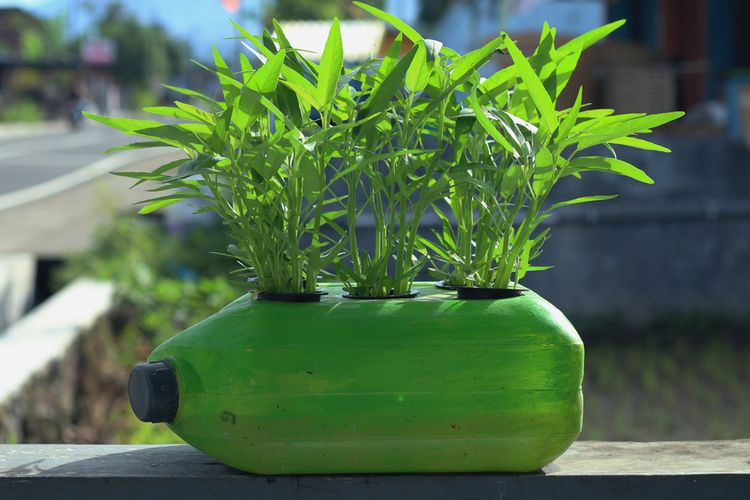

Tips Merawat Kangkung
1. Perawatan kangkung darat organik dapat dilakukan dengan cara pemberian pupuk kandang secara berkala dan teratur.
Kangkung dapat diberikan pupuk kandang dengan mencampurkannya sekam dan arang.
2. Melakukan penyiangan terhadap gulma pada kangkung.
Gulma dapat menghambat pertumbuhan kangkung sehingga seyogianya dilakukan selama seminggu sekali.
3. melakukan penyiraman pada kangkung darat organik, karena kangkung darat sangat memerlukan banyak air.